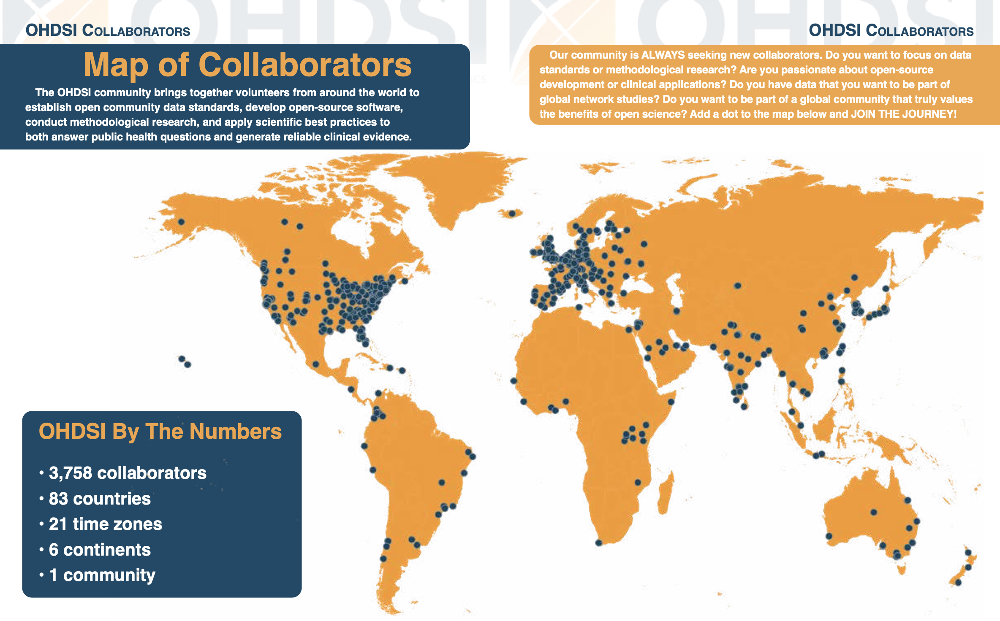
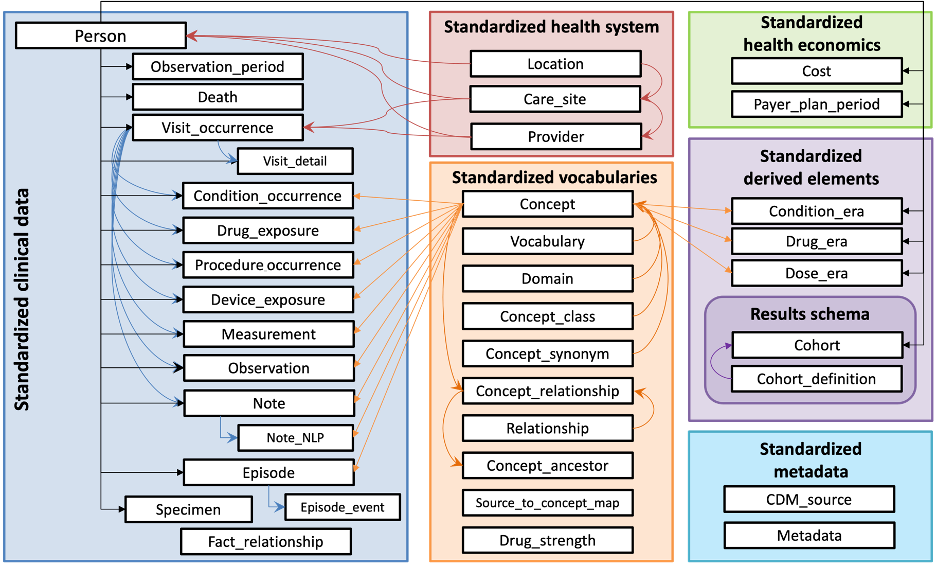
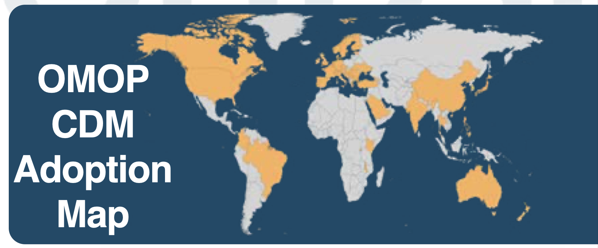
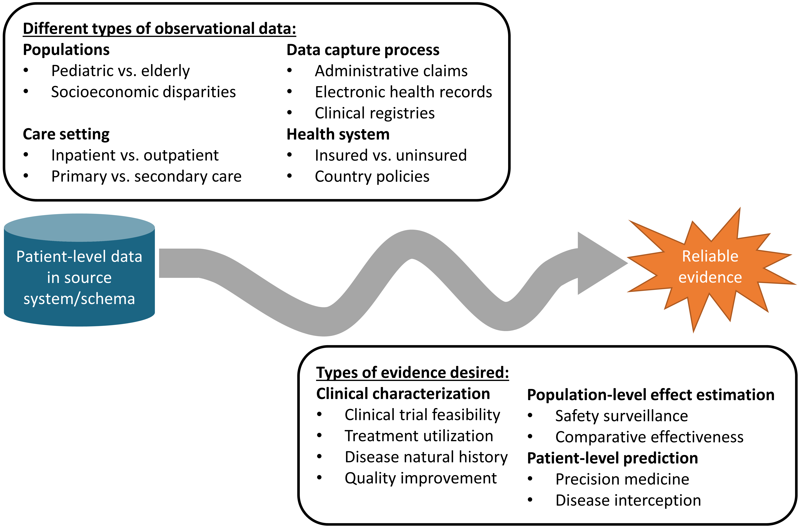

1 บทนำ
ข้อมูลที่เก็บรวบรวมจากการให้บริการทางการแพทย์ (routine clinical services) ในระบบสารสนเทศของโรงพยาบาล (hospital information system หรือ HIS) หรือระบบเวชระเบียนอิเล็กทรอนิกส์ (electronic health records หรือ EHRs) มีบทบาทเพิ่มมากขึ้นเรื่อย ๆ ในการนำมาใช้สำหรับงานวิจัยทางการแพทย์ โดยเฉพาะอย่างยิ่งด้าน large-scale observational research และสนับสนุนการวิจัย pragmatic clinical trials ด้วยประโยชน์จากการเก็บข้อมูลปริมาณมาก จากกลุ่มประชากรหลากหลาย เป็นระยะเวลานาน จึงทำให้เห็นผลลัพธ์ในรูปแบบ real-world evidence อันนำไปสู่การพัฒนาระบบ learning health system เพื่อพัฒนาการรักษาพยาบาล
ทั้งนี้ ด้วยความแตกต่างหลากหลายของข้อมูลจากมหาวิทยาลัย โรงพยาบาล แหล่งต่าง ๆ การนำข้อมูลดังกล่าวมาใช้เพื่อการวิจัย จึงมีปัญหาที่พบบ่อย ดังเช่น
- การรวบรวมข้อมูลจากฐานข้อมูลต่าง ๆ มีความซับซ้อน และต้องใช้เวลาในการรวบรวมข้อมูล ให้เหมาะสมกับการวิเคราะห์และการวิจัย
- การวิเคราะห์ที่พัฒนาขึ้น เช่น การเขียนโปรแกรม การใช้โปรแกรมทางสถิติ ไม่สามารถทำซ้ำ (reproducible) กับชุดข้อมูลใหม่หรือข้อมูลอื่นได้
- ปริมาณผู้ป่วย ปริมาณข้อมูลบางโรคอาจมีจำกัด (เช่น โรคหายาก หรือ โรคอุบัติใหม่) จึงต้องมีการรวบรวมข้อมูลจากหลายแหล่ง แต่ข้อมูลมาจากหลายแหล่งทำให้ต้องปรับรูปแบบโครงสร้างข้อมูลให้เหมือนกันก่อนจึงจะสามารถทำการวิเคราะห์ได้ จึงต้องใช้เวลาเพิ่มขึ้น และอาจมีข้อผิดพลาดเกิดขึ้นระหว่างการปรับแปลงข้อมูล
- การคุ้มครองข้อมูลสุขภาพทั้งด้าน security และ privacy จะต้องดำเนินการให้ถูกต้องเพื่อลดความเสี่ยงต่าง ๆ แต่การส่งข้อมูลในรูปแบบไฟล์ให้กัน เป็นการดำเนินการที่ไม่ปลอดภัย อาจก่อให้เกิดความเสียหายได้
จากประเด็นข้างต้น จึงมีความพยายามในการสร้างมาตรฐานการจัดเก็บข้อมูลสำหรับการวิจัยจาก routinely collected data ในระบบโรงพยาบาลเดิม มาตรฐานหนึ่งที่ได้รับความนิยมเพิ่มมากขึ้นเรื่อย ๆ ในปัจจุบัน และมีการใช้งานอย่างแพร่หลายทั่วโลก คือ Observational Medical Outcomes Partnership (OMOP) Common Data Model (CDM)
OMOP CDM เกิดขึ้นเมื่อ ค.ศ. 2007 (พ.ศ. 2550) โดยได้รับเงินทุนจาก National Institutes of Health (NIH) สหรัฐอเมริกา ในระยะเริ่มต้นของโครงการพัฒนามีวัตถุประสงค์เพื่อพัฒนาฐานข้อมูลเพื่อติดตามความปลอดภัยจากการใช้ยา (drug safety) ในสหรัฐอเมริกา โดยการรวบรวมข้อมูลจากหลากหลายโรงพยาบาลในประเทศ และต่อมารวมเครือข่ายกันในชื่อว่า Observational Health Data Sciences and Informatics (OHDSI)
1.1 OHDSI
Observational Health Data Sciences and Informatics (OHDSI) อ่านว่า โอดิสซี เป็นความร่วมมือระดับนานาชาติ เพื่อพัฒนาต่อยอด OMOP CDM และเครื่องมือต่าง ๆ เพื่อพัฒนางานวิจัย โดยเฉพาะอย่างยิ่ง observational research ในระดับสากล เพื่อสร้าง evidence ที่เป็นประโยชน์ในการรักษาพยาบาล (Hripcsak et al. 2015) ภายในเครือข่ายประกอบด้วย นักวิจัย นักพัฒนา มากกว่า 3,000 คน จากมหาวิทยาลัยต่าง ๆ ทั่วโลก เช่น Columbia University, Northeastern University, UCLA, Johns Hopkins, Erasmus University, Oxford University, Ajou University, National University of Singapore เป็นต้น รวมถึงบริษัทยาและวิจัย เช่น Janssen, IQVIA เป็นต้น โดยไม่มีการเสียค่าใช้จ่ายใด ๆ ในการเข้าร่วมเครือข่าย

1.1.1 Mission ภารกิจ
To improve health by empowering a community to collaboratively generate the evidence that promotes better health decisions and better care.
เพื่อพัฒนาสุขภาพโดยการสนับสนุนให้เครือข่ายร่วมมือกันสร้างหลักฐานที่ส่งเสริมการตัดสินใจเพื่อสุขภาพและการดูแลที่ดีขึ้น
1.1.2 Vision วิสัยทัศน์
A world in which observational research produces a comprehensive understanding of health and disease.
1.1.3 Values คุณค่า
เครือข่าย OHDSI ให้ความสำคัญกับคุณค่า 6 ข้อต่อไปนี้ในทุก ๆ กิจกรรมที่ทำร่วมกัน ตั้งแต่การพัฒนามาตรฐานข้อมูล เครื่องมือ งานวิจัย ตลอดจนถึงการประชุม เอกสารเผยแพร่ต่าง ๆ
Innovation: Observational research is a field which will benefit greatly from disruptive thinking. We actively seek and encourage fresh methodological approaches in our work.
นวัตกรรม: การวิจัยจากการสังเกต (observational research) เป็นสาขาที่จะได้รับประโยชน์อย่างมากจากการคิดแบบใหม่ ๆ เราต้องการและสนับสนุนวิธีการวิจัยใหม่ในงานของเรา
Reproducibility: Accurate, reproducible, and well-calibrated evidence is necessary for health improvement.
การทำซ้ำได้: หลักฐานที่แม่นยำ ทำซ้ำได้ และตรวจสอบอย่างดีเป็นสิ่งจำเป็นสำหรับการพัฒนาทางด้านสุขภาพ
Community: Everyone is welcome to actively participate in OHDSI, whether you are a patient, a health professional, a researcher, or someone who simply believes in our cause.
ชุมชน: ทุกคนยินดีที่จะเข้าร่วมใน OHDSI อย่างกระตือรือร้น ไม่ว่าคุณจะเป็นผู้ป่วย ผู้ให้บริการทางการแพทย์ นักวิจัย หรือผู้ที่เชื่อในหลักการของเรา
Collaboration: We work collectively to prioritize and address the real-world needs of our community’s participants.
ความร่วมมือ: เราทำงานร่วมกันเพื่อจัดลำดับความสำคัญและตอนสนองความต้องการของผู้เข้าร่วมชุมชนของเรา
Openness: We strive to make all our community’s proceeds open and publicly accessible, including the methods, tools and the evidence that we generate.
ความเปิดเผย: เราพยายามทำให้ผลงานของชุมชนของเราเปิดเผยและสามารถเข้าถึงได้โดยสาธารณะ รวมถึงวิธีการ เครื่องมือ และหลักฐานที่เราผลิต
Beneficence: We seek to protect the rights of individuals and organizations within our community at all times.
การสร้างประโยชน์: เราต้องการปกป้องสิทธิ์ของบุคคลและองค์กรในชุมชนของเราตลอดเวลา
1.2 OMOP CDM
ข้อมูลเมื่อ พฤศจิกายน 2023 มีมาตรฐาน OMOP CDM ถึง version 6.0 แต่ community experts ยังแนะนำให้ใช้ v5.4 ก่อน เนื่องจากเครื่องมือต่าง ๆ ยังไม่ support v6

Observational Medical Outcomes Partnership Common Data Model (OMOP CDM) version 5.4 จะเก็บในรูปแบบ relational database ประกอบด้วย 6 หมวดหมู่ ตาม รูปที่ 1.2 ดังนี้
- Clinical data ข้อมูลทางคลินิก มี 17 ตาราง (table) อาทิ
- Person (ข้อมูลบุคคล)
- Observation_period (ระยะเวลาที่เข้ารับบริการ)
- Visit_occurrence (การเข้ารับบริการ)
- Visit_detail (รายละเอียดการเข้ารับบริการ)
- Condition_occurrence (ผลการวินิจฉัยและอาการของโรค)
- Drug_exposure (ยาที่ได้รับ)
- Procedure_occurrence (หัตถการ)
- Device_exposure (อุปกรณ์ทางการแพทย์)
- Measurement (ผลการตรวจทางห้องปฏิบัติการและกายภาพ)
- Observation (ผลการตรวจอื่น ๆ)
- Death (การเสียชีวิต)
- Note (บันทึก)
- Specimen (สิ่งส่งตรวจ)
- Vocabularies คลังชุดคำศัพท์ ประกอบด้วย
- Standard concepts คำศัพท์มาตรฐาน เช่น SNOMED-CT LOINC RxNORM ICD9Proc เป็นต้น สำหรับการใช้ข้อมูลร่วมกันระดับนานาชาติ
- Non-standard concepts เช่น ICD10 เป็นต้น รวมถึงรหัสในประเทศไทย เช่น TMT, TMLT เป็นต้น
- Classification concepts ได้แก่ MedDRA (สำหรับกลุ่มโรค) และ ATC (สำหรับกลุ่มยา)
- Health system ข้อมูลเกี่ยวกับสถานพยาบาล
- Health economics ข้อมูลเกี่ยวกับค่าใช้จ่ายในการบริการ
- Derived elements ข้อมูลที่สรุปรวมเพิ่มเติม เช่น ระยะเวลาที่เป็นโรค ระยะเวลาที่ได้รับยา การแบ่งกลุ่มผู้ป่วย (cohort)
- Metadata ข้อมูลประกอบ CDM เพิ่มเติม เช่น ที่มาของข้อมูล ระยะเวลา version ของข้อมูล เป็นต้น
รายละเอียดเพิ่มเติม ของแต่ละ table รวมถึง Data Dictionary สามารถเข้าถึงได้ที่ https://ohdsi.github.io/CommonDataModel/cdm54.html และ ER Diagram
จากการสำรวจเมื่อกันยายน 2023 ทั่วโลก มีฐานข้อมูล OMOP CDM มากกว่า 500 ชุด เกือบ 1 พันล้านผู้ป่วย จาก 49 ประเทศ รวมถึงประเทศไทย ซึ่งคณะแพทยศาสตร์ศิริราชพยาบาล สำนักงานหลักประกันสุขภาพแห่งชาติ (สปสช.) ได้แปลงข้อมูลเป็น OMOP CDM แล้ว

1.3 Real-world Data to Real-world Evidence

ข้อมูล real-world data ของผู้ป่วย มีหลากหลายประเภท โดยอาจแบ่งได้ตาม
- กลุ่มประชากร เช่น เด็ก ผู้สูงอายุ หรือ กลุ่มทางสังคม (socioeconomic)
- การให้บริการ เช่น ผู้ป่วยนอก/ใน หรือ สถานพยาบาล
- ระบบการเก็บ/ได้มาซึ่งข้อมูล เช่น ระบบโรงพยาบาล (EHR) การเบิกจ่าย (Claims) หรือ research registry
- ระบบสุขภาพ เช่น สถานพยาบาลของรัฐ/เอกชน หรือ ประกันสุขภาพของรัฐ/เอกชน
การนำข้อมูลเหล่านี้มาใช้งานจึงต้องมีความเข้าใจในธรรมชาติของข้อมูลและข้อจำกัดต่าง ๆ เช่น ข้อมูลโรงพยาบาลหรือการเบิกจ่ายไม่ได้เก็บมาเพื่อการวิจัยโดยเฉพาะ จึงต้องระมัดระวังคุณภาพข้อมูลเป็นพิเศษ เป็นต้น เมื่อทำการตรวจสอบต่าง ๆ ประกอบกับออกแบบการวิเคราะห์ที่เหมาะสมกับข้อมูล จึงได้มาซึ่งผลการวิจัย evidence โดยใน OHDSI แบ่งออกเป็น 3 รูปแบบ
- Clinical characterization
- Clinical trial feasibility
- Treatment utilization
- Disease natural history
- Quality improvment
- Population-level estimation
- Safety survillance
- Comparative effectiveness
- Patient-level prediction
- Precision medicine
- Disease interception
โดยมีรายละเอียดเพิ่มเติมใน The Book of OHDSI บทที่ 1.1 และ บทที่ 7